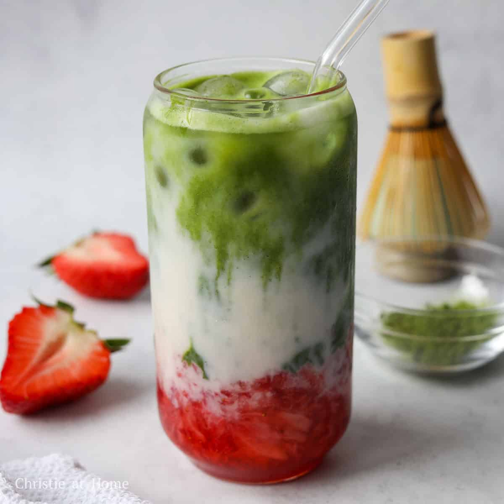

Strawberry Matcha Latte

Description
Strawberries + matcha = a matcha made in heaven. Read the recipe below for the best way to make a iced strawberry matcha latte. A recipe that will bring some sweetness to your eyes and to your taste buds.
Ingredients
- 3/4 cup milk of choice
- 4-5 strawberries
- 2.5 tablespoons sugar or sweeter of choice
- 1.5 teaspoons matcha powder, preferably ceremonial grade
- 4 tablespoons water
- ice
Recipe
- Mash or blend the strawberries and sugar until the strawberries are pureed to desired texture.
- Add your strawberry puree mixture to a glass and pour your ice on top.
- Sift your matcha into a bowl with the water. Use a whisk or frother to blend the matcha until frothy. Make sure the water is warm or room temperature, not boiling hot, to preserve the taste of the tea.
- Pour your milk over the glass with ice and then your matcha for the picture perfect three layered look.
- Stir your latte, take a sip, and enjoy!